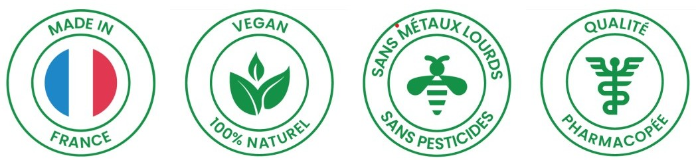
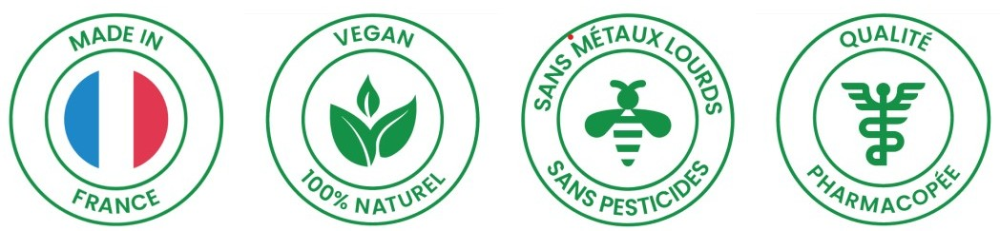

Clou de Girofle - Ding xiang
丁香 - Syzygium aromaticum
Pour favoriser l'appétit et maintenir une bonne digestion.
- Contribue à une bonne digestion
- Soulage les sensibilités de l'estomac
- Stimule l'appétit
Formulation: 1 Petit Sachet plante 50g

Pour favoriser l'appétit et maintenir une bonne digestion.
Formulation: 1 Petit Sachet plante 50g
Clou de Girofle (Ding xiang, Syzygium aromaticum) 50g, d'origine chinoise, qualité pharmacopée.